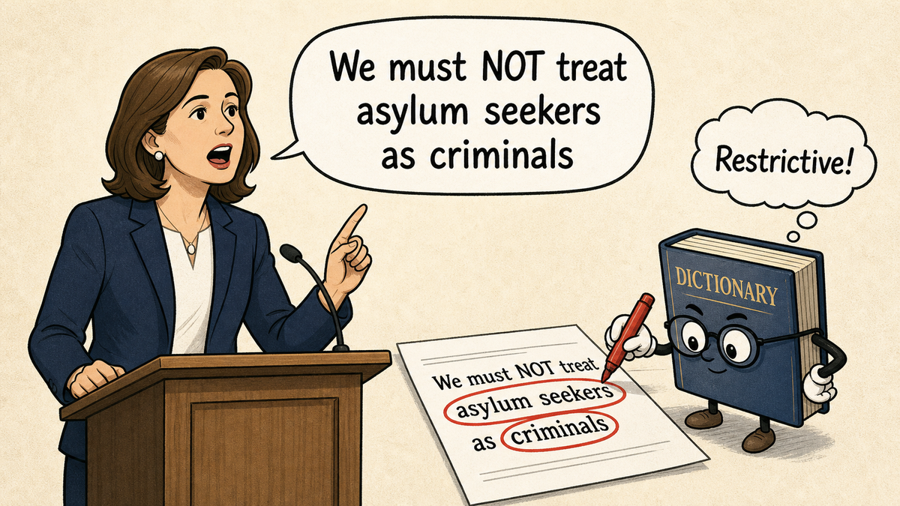
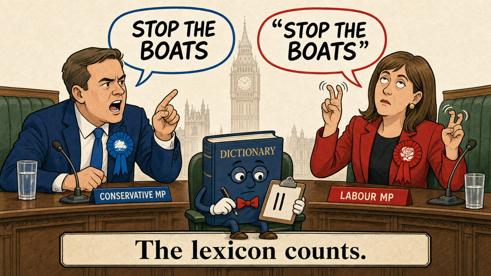

Stance without affect: where lexicons fail in UK parliamentary immigration speech

In February the Guardian published a striking visual analysis of 100 years of immigration rhetoric in the House of Commons, built in collaboration with researchers at UCL. The piece scrolls through a century of Hansard, tracking how MPs across parties have spoken about immigration. The headline finding is that Conservative and Reform UK MPs are now discussing immigration in the most negative terms since 1923. The visualisation is beautifully done, the methodology is more careful than most computational text analysis I've seen in journalism, and the team has been admirably transparent about how the model was built. It uses a custom machine learning classifier, trained on human-annotated examples with LLM-assisted labelling, designed to distinguish general emotional language from sentiment directed specifically at immigration.
Reading the piece made me curious about where this kind of analysis remains hardest. Computational stance detection on parliamentary speech traditionally leans heavily on affective vocabulary, the assumption that emotional language tracks substantive position. Hostile words signal hostile stance; warm words signal warm stance. The Guardian/UCL team have moved well beyond a naive lexicon, but the assumption hasn't gone away entirely. I wanted to probe one specific gap: how often does affective vocabulary diverge from substantive stance in real Commons speech, and how well do simpler methods cope when it does?
What I did
I pulled Commons Hansard from 2015 to 2025 through TheyWorkForYou's bulk XML, filtered for immigration trigger terms, and built a corpus of about 22,700 speeches. From this I constructed a deliberately curated sample of 47 speeches across five sub-types where I expected surface vocabulary to diverge from substantive stance, plus a control set of straightforwardly restrictive speeches. The sub-types: direct negation of hostile vocabulary, quoted hostility being criticised, critique of named restrictive policies, refutation of hostile framing, and ministerial defences of restrictive policy dressed in humanitarian language. Candidates were generated by regex search over the corpus and manually reviewed for clean examples.
This is not a random sample. It is a stress test, designed to probe failure modes. The results need to be read in that light.
For labels, I worked through Claude Sonnet first, then reviewed each speech and adjudicated uncertain or borderline cases through Claude Opus. Where Sonnet, Opus, and my own reading converged, I treated that as the consensus label. Where they didn't, I read the full speech context and made the call. The lexicon scored the speeches independently, using a hand-built word list of affective terms for and against immigration, with a count-positive minus count-negative scoring rule.
So the comparison isn't strictly "human vs. lexicon vs. LLM." It's "lexicon vs. a frontier-LLM-and-human consensus." That's a real and useful comparison, but it's narrower than the post might otherwise suggest. I'll come back to this.
Three speeches
Tahir Ali, 9 January 2024
"The Government's approach to asylum seekers can at best be described as a farce. The asylum application backlog persists and is growing. Thousands of people have simply disappeared into the underground economy, with the Home Office admitting that it has lost track of nearly 17,000 people. The continued use of hotel accommodation is costing the British taxpayer untold millions, while the disgraced Rwanda plan limps ahead."
Consensus label: pro-refugee. Lexicon: mixed/unclear.
A Labour MP attacking the Conservative government's asylum policy during the Rwanda Bill committee stage. The stance is unmistakeable to any human reader. This is pro-refugee, criticising restrictive policy for being cruel and incompetent. But notice the vocabulary. "Backlog," "underground economy," "lost track," "hotel accommodation," "British taxpayer," "Rwanda plan." Administrative, operational, managerial words. Nothing that registers as either positive or negative on an affect lexicon.
The lexicon defaults to "mixed/unclear" because nothing trips its triggers.
Most parliamentary speech looks like this. The grand humanitarian set-piece is the exception; the operational critique is the norm. If your method only detects stance when stance comes wrapped in emotional vocabulary, you'll be silent on most of what Parliament actually says about immigration.
Tulip Siddiq, 5 December 2018
"Immigration officers go around in the middle of the night capturing people and putting them in prison-like cells. In this country, we have legislation that limits how long terror suspects and criminal suspects can be detained. Terror suspects can be detained without charge for 14 days and criminal suspects can be detained without charge for 28 days, but we do not afford that same protection to refugees, asylum seekers and immigrants. That should put us to shame."
Consensus label: pro-refugee. Lexicon: restrictive/hostile.
A Labour MP introducing a ten-minute rule bill to cap immigration detention at 28 days. The stance is unambiguously pro-refugee. She's arguing that asylum seekers deserve more legal protection than they currently have. But the vocabulary tells the opposite story. "Capturing." "Prison-like cells." "Terror suspects." "Criminal suspects." "Detained without charge."
Six instances of restrictive vocabulary in a single argument for greater humanitarian protection. The lexicon reads the words and labels the speech restrictive.
This is the inverse of the Tahir Ali problem. There, sparse vocabulary defaulted the lexicon to "mixed." Here, dense vocabulary actively misled it. Either way, the surface diverges from the substance, and a method that only sees the surface gets it wrong.
Ben Obese-Jecty, 10 February 2025
"With no credible deterrent since the election, we have seen numbers rocket and migrant hotels reopen... The only deterrent in the Bill appears to be five years in prison if migrants refuse to be rescued in the channel by French authorities... This is a terrible Bill that pays lip service to controlling illegal immigration by talking tough while crossing its fingers behind its back."
Consensus label: restrictive/hostile. Lexicon: pro-refugee.
A Conservative MP attacking Labour's Border Security, Asylum and Immigration Bill from the right. The substance is restrictive. He wants harder deterrence, more deportations, and is angry that the current government has weakened the previous regime. But look at the surface pattern. The hostile vocabulary appears almost entirely in negated form: "no credible deterrent," "not be the solution," "lip service to controlling illegal immigration." The lexicon, with naive negation handling, reads negated-restrictive as pro-refugee and flips its label.
This is the third failure mode. The first speech had too little vocabulary. The second had too much. This one has the right vocabulary but in the wrong syntactic context.
Adding this speech to the mix matters for another reason: it shows the failure is methodological, not political. Lexicons don't fail in one direction. They fail wherever surface vocabulary diverges from substantive stance, and in parliamentary speech that happens in both directions roughly equally often.
The systematic pattern
Across the 47 speeches, the lexicon agrees with the consensus labels 83% of the time overall, broken down by sub-type as follows:
| Sub-type | Lexicon agreement |
|---|---|
| Refutation of hostile framing | 100% |
| Quoted hostility | 88% |
| Direct negation | 86% |
| Ministerial humanitarian register | 86% |
| Critique of restrictive policy | 75% |
| Restrictive controls | 70% |
| Overall | 83% |
The lexicon's failures aren't random. They cluster in exactly the sub-types where surface and substance diverge. It struggles most on restrictive control speeches, where ministers defend tough policy in humanitarian register or where critics like Obese-Jecty use negation to attack from the right, and on critique-of-restrictive-policy speeches, where pro-refugee MPs use hostile vocabulary to describe what they oppose. The confusion matrix is symmetric: three pro-stance speeches misclassified as restrictive, three restrictive speeches misclassified as pro.
A few caveats are worth being explicit about. The sample was constructed to find these failure modes, so 17% disagreement is an upper bound on a stress test, not an estimate of lexicon error on random parliamentary speech. Frontier LLM labels were the starting point for the consensus, so the comparison is partly tautological in the LLM's favour; the more honest claim is "the lexicon disagrees with what careful human-plus-frontier-LLM labelling concludes about specific kinds of speech," not "the LLM beats the human." And labelling parliamentary stance is genuinely hard. Several of my own initial reads of subtler speeches were wrong, including a James Brokenshire 2016 speech I first labelled as pro-refugee because of its humanitarian language. Re-reading, it was a minister arguing that child refugees should be processed in France rather than transferred to the UK, restrictive substance dressed in compassionate framing. The LLM flagged the underlying position; I had to be pushed back to the rubric to see it.
Echoes and amplification

The per-speech failures above are local. They affect individual labels. The same mechanism produces a more interesting failure when you look at how specific phrases move across the chamber over time.
Consider "stop the boats." Rishi Sunak made it one of his five pledges in January 2023, and the slogan dominated Conservative immigration rhetoric for the next eighteen months. After filtering to high-confidence immigration-context uses from 2022 onward, the phrase appears 400 times in Hansard. Conservative MPs account for 306 own-voice uses, the dominant policy framing. But the phrase also appears 50 times in Labour speeches, 8 times in SNP speeches, and 9 in Liberal Democrat speeches. A lexicon counting mentions by party would conclude that opposition parties were also engaging with the slogan, perhaps even adopting it.
They were not. Of Labour's 50 filtered mentions, 39 are classified by an LLM pass as quoted or critical use rather than own-voice. The SNP's 8 mentions are all quoted or critical, with zero own-voice uses. Across all opposition mentions of "stop the boats," about three quarters are speakers using the phrase to attack the policy or quote the people defending it.
Yvette Cooper, speaking on the Rwanda Bill in December 2023:
"We have the former Home Secretary, the right hon. and learned Member for Fareham (Suella Braverman), who signed the last agreement and brought forward the last piece of legislation, saying that the Bill is fatally flawed and will not stop the boats. Yesterday we had Back Benchers saying that the Bill should have been pulled because it is partial and incomplete."
One use of "stop the boats", entirely critical. A lexicon counting Labour uses of restrictive vocabulary would record an instance of slogan uptake. A reader hears a rebuttal.
The split is visible in the data:
Source: Commons Hansard via TheyWorkForYou/Public Whip XML, 2022-2025 high-confidence immigration-context mentions. Use type classified with Claude Sonnet.
The contrast with "small boats" makes the pattern sharper. The descriptive phrase has been absorbed across parties as neutral operational vocabulary. By 2025, Labour MPs use it 78 times in their own voice; Conservative MPs use it 28. There is no echo signal because the phrase no longer carries partisan loading. A lexicon counting "small boats" by party in 2025 would correctly conclude that the term is now bipartisan vocabulary, because it actually is.
This matters for aggregate analysis. When a political phrase enters circulation through one party and gets amplified through opposition criticism, naive metrics will show convergence on the original framing. The reality is closer to the opposite.
What this means for the Guardian/UCL analysis
The UCL team built a custom ML model with LLM-assisted annotation, not a lexicon. The failures shown here apply to lexicon baselines, not to their specific method. Their classifier is presumably trained on annotated examples that include some of these defensive and ministerial-humanitarian cases. How well it handles them is an empirical question that their published methodology doesn't fully resolve.
What this probe does suggest is a broader point about computational stance analysis of political speech. Defensive rhetoric, ministerial humanitarian framing, and rhetorical echo through critique are not edge cases. They are structurally common in Commons debate, and they concentrate during politically heated periods, exactly the periods where the headline findings of these analyses tend to land. A model that handles these patterns well will tell a different story about how parliamentary rhetoric has evolved than a model that doesn't. The Guardian's headline finding that Conservative and Reform rhetoric is at its most negative since 1923 depends, in ways the methodology summary doesn't quite spell out, on the model getting these cases right.
Worth interrogating. Not worth doubting on the basis of this probe alone.
What's next
A few directions I'd want to extend this in:
Apply the comparison to a properly sampled random subset of immigration speeches, not just curated stress cases, to get an honest estimate of how often lexicons and LLMs disagree on real parliamentary input.
Add a fine-tuned transformer baseline, a properly trained classifier on a published political-sentiment dataset, so the comparison isn't just "modern frontier model versus word list." That's the comparison that would actually evaluate whether the kind of model the UCL team built closes most of the gap.
Run aggregate party-level analysis on a single year, comparing what the lexicon, a trained classifier, and an LLM each conclude about Labour versus Conservative stance, with confidence intervals. That would test whether the per-speech disagreements wash out at aggregate scale or whether they meaningfully bias party-level comparisons.
Extend the echo analysis to other politically loaded phrases ("hostile environment," "invasion," "swamped"), with proper context filtering to separate immigration usage from other senses. The "hostile environment" case is particularly interesting because the phrase Theresa May coined in 2012 is now used overwhelmingly by Labour and SNP MPs to criticise the policy May created.
I'll write all this up if and when I get to it.
Credit where it's due: the Guardian/UCL team's transparency about methodology is what made this engagement possible. Most computational analyses in journalism are black-boxed; theirs isn't. Code and data for everything above are at github.com/tyler-martin-12/guardian-analysis-public.